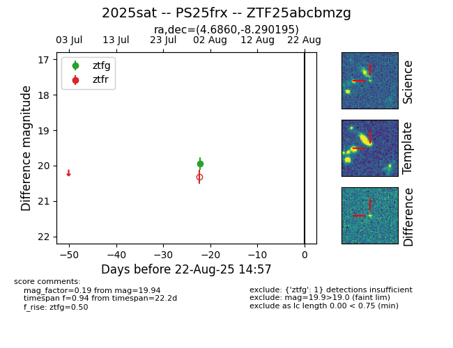

Target 2025sat at 2025-08-22 16:31, see:
FINK: fink-portal.org/ZTF25abcbmzg
Lasair: lasair-ztf.lsst.ac.uk/objects/ZTF25abcbmzg
ALeRCE: alerce.online/object/ZTF25abcbmzg
TNS: wis-tns.org/object/2025sat
YSE: ziggy.ucolick.org/yse/transient_detail/2025sat
alt names
ZTF25abcbmzg (ztf,alerce)
2025sat (tns,yse)
PS25frx (panstarrs)
coordinates:
equatorial (ra, dec) = (4.6860,-8.29019)
galactic (l, b) = (99.0876,-69.63405)
photometry
last ztfg=19.94
1 ztfg detections
